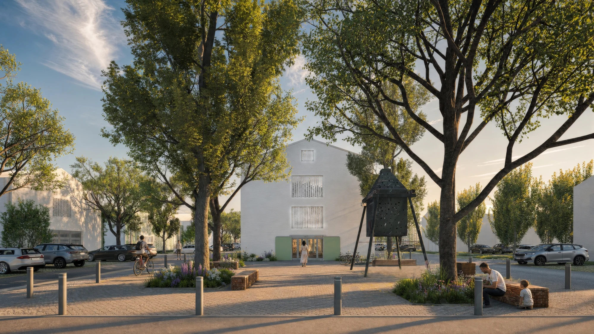
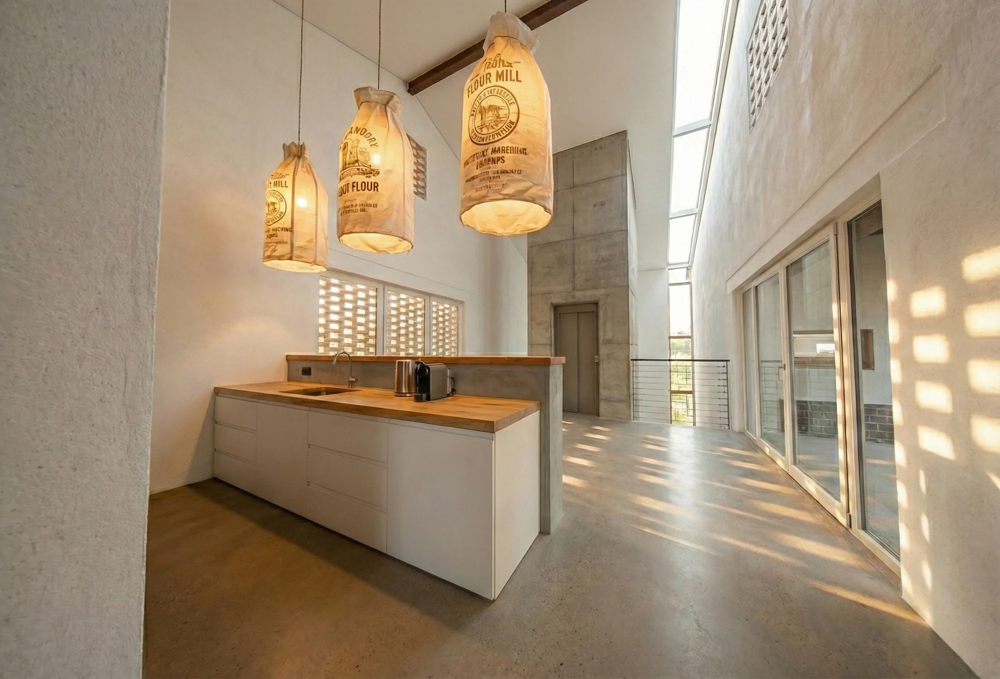
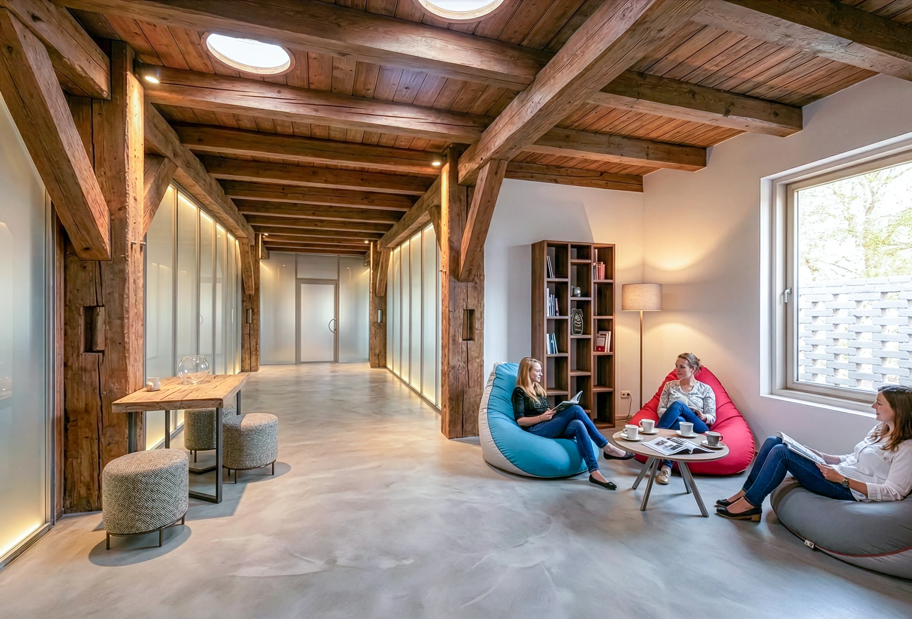
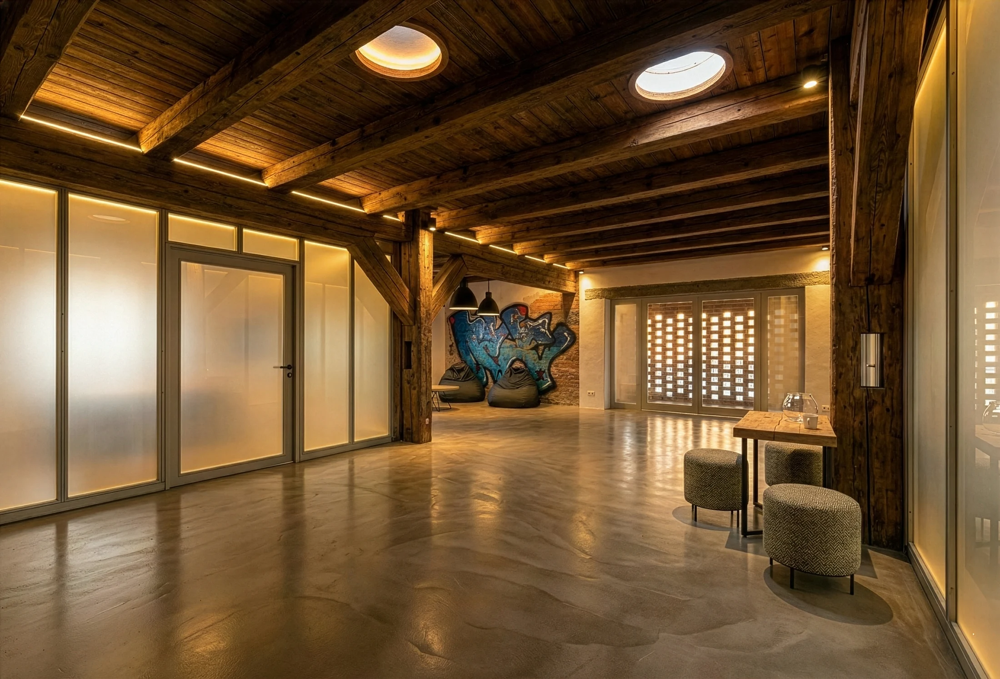
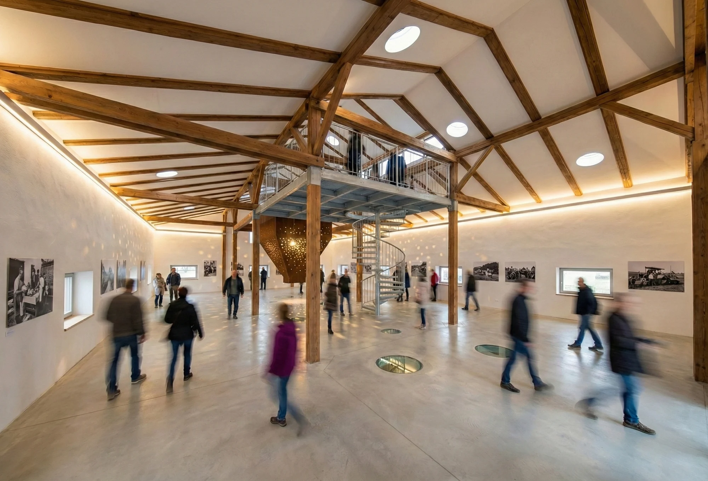

Sýpka BIQSýpka BIQ / Bílá ikona Kostic
SÝPKA.
SRDCE AREÁLU.
Paměť místa a nová budoucnost. Jediná původní stavba, která zůstane zachována.

Od obilí k vědomostem
BÍLÁ IKONA KOSTIC.
Bílá ikona Kostic – dominanta celého areálu a jediná původní stavba bývalého JZD, která zůstane zachována. Její architektura je východiskem architektury nových výrobních hal.
Sýpka patří k výrazným stavbám někdejšího zemědělského areálu v Kosticích. Dnes připravujeme její proměnu v místo, které propojí historii s podnikáním, tvořivostí a moderními technologiemi. V areálu YEZEDO tak vznikne otevřené zázemí pro místní firmy, řemeslníky, obyvatele i návštěvníky regionu Podluží.
Architektonický návrh zachovává charakteristické bílé cihlové zdivo, původní dřevěné konstrukce a další prvky připomínající zemědělskou minulost budovy. Citlivě je doplňuje novou přístavbou, přirozeným světlem a variabilním uspořádáním interiéru. Původní materiály a technické vybavení získají nové využití – například někdejší násypnice na obilí se promění v osobité světelné objekty.
Tři podlaží / tři způsoby spolupráce
MÍSTO PRO TVORBU.
PROSTOR PRO SETKÁNÍ.

SDÍLENÉ DÍLNY A STYLOVÁ KAVÁRNA
V přízemí jsou navrženy sdílené dílny pro řemesla a tvůrčí činnost – variabilní dispozice s recepcí ve vstupní hale. Sdílené dílny a tvůrčí zázemí doplní stylová kavárna.

COWORKING A SMART VILLAGE HUB
Druhé podlaží poskytne sdílené kanceláře, coworking a digitální velín pro chytrou správu obecní infrastruktury.

MULTIFUNKČNÍ SÁL A VYHLÍDKOVÁ GALERIE
Nejvyšší patro nabídne otevřený multifunkční sál pro semináře, výstavy, prezentace a komunitní setkání, doplněný vyhlídkovou galerií v prostoru původního střešního světlíku.

Living Lab BIQ
NOVÉ PŘÍSTUPY.
OVĚŘENÉ V PRAXI.
Sýpka bude fungovat také jako živá laboratoř – místo, kde se nové přístupy ke komunitní energetice, digitalizaci a hospodaření se zdroji ověřují v praxi a srozumitelně představují školám, veřejnosti i odborníkům. Propojí zázemí pro začínající podnikatele s prostorem pro sdílení zkušeností a rozvoj místních nápadů.
Součástí návrhu je odpovědný přístup k materiálům, energii i okolnímu prostředí. Opětovné využití stavebních prvků, úsporný provoz, omezení letního přehřívání a navazující zeleň s hospodařením s dešťovou vodou mají pomoci snižovat ekologickou stopu a přizpůsobovat areál klimatické změně. Sýpka tak zachová paměť místa a nabídne mu novou budoucnost.